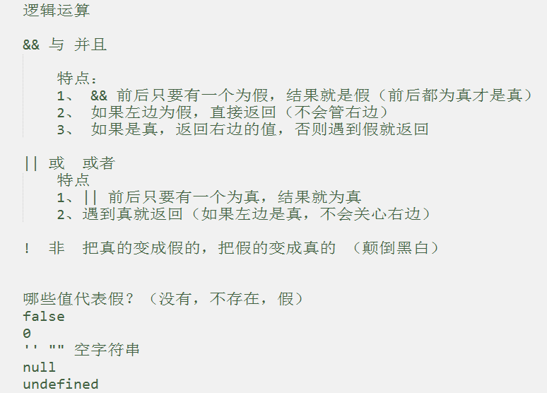

js--逻辑运算与分支
作者： 千锋李文浩
时间： 17/01/10
自增自减运算
a++ a--
++a --a
a++ 和 ++a的共同点和不同点：
共同点：如果 a++ 或者 ++a 单独是一条语句的话，二者没什么区别，都是对a进行+1
var a = 10; a++; alert(a);//11 ++a; alert(a); //12
区别：如果和其他语句混合使用，a++是先执行其他语句，再执行a++操作，++a相反
var a = 10; alert(a++); //10 var a=10; alert(++a); //11
实战
var k = 10;
alert( k++ + ++k + k++ ); //34
执行顺序
k++ k=10 10+1
++k k=11 11
K++ k=11 11+1
运算结果 11+11+12=34
运算完毕，k++再改变k值,运算的时候++k时k=11, 所以第一个k++时k=12,第二个k++时k=13，所以最后k=13;
进制（扩展）
1、什么是进制？
一种进位方法
二进制 0 1 10 11 100 （0 1 2 3 4）
八进制 010 7 10 11 （7 8 9）
js中，数字前面加0，代表8进制数
十进制
十六进制 #aascdef #000 #fff 9 a b c d e f 10
js中，数字前面写0x，代表16进制
alert() 警告框
1、alert(mes); 弹出一个内容为mes信息并且带有【确定】按钮的框！
2、alert()的那些事
a、alert(mes)只能显示一条信息 alert(mes1,mes2)只能显示mes1
b、alert(mes)弹出信息时，用户不能进行其他操作，只能点击【确定】按钮，并且程序会暂停执行。
3、有什么用？
1、提示用户
2、用于调试（测试）（常用）
Math 数学方法（扩展）
Math.round() 四舍五入
小数部分 < 0.5 直接舍弃小数部分
>= 0.5 整数部分+1 （保留整数）
Math.ceil() 向上取整
如果小数不全为0，则整数部分+1
Math.floor() 向下取整
直接舍弃小数部分
Math.random() 随机数 0 < Math.random() < 1
重温NaN
什么情况下会产生NaN？
1、Number('abc'); //NaN
2、数学运算中，除了+操作以外，如果-*/% 操作中有一个是非数字类型字符串，就会产生NaN
逻辑运算
甲：如果不下雨并且我有女朋友的话，晚上就去看电影。
乙：如果我有女朋友并且我有钱的话，晚上就去看电影。
丙：如果我有女朋友或者有钱的话，晚上就去看电影。
&&(与，并且) ||(或，或者) !(非)

逻辑运算的笔试 坑（笔试题）
1、alert( 3&&5 ); 的结果是()
A:3 B:5 C:true D:false
2、alert( 0||1 ); 的结果是()
A:0 B:1 C:true D:false
程序的三大结构
1、我的某天
6:10 起床
8:00 吃早餐
9:00 上班
12:00 吃午饭
18:00 下班
19:30 如果没下雨，就去看电影
21:00 在附近跑步10圈
23:00 睡觉
2、程序的三大结构（顺序结构、选择结构、循环结构）


选择结构（判断）
1、如果***，就...
if(条件){
条件成立做什么事
}
如果我有一辆宝马，我就去做滴滴。
2、如果***，就...，否则...
if(条件){
条件成立做什么事
}else{
条件不成立做什么
}
如果我有100万，就去山区支教，否则去千锋当讲师。
实战
1、判断一个整数，属于哪个范围：大于0；小于0；等于0
2、判断一个整数是偶数还是奇数，并输出判断结果
3、开发一款软件，根据公式（身高-108）*2=体重，可以有10斤左右的浮动。来观察测试者体重是否合
4、字体放大时限制最大为32px，最小为12px
5、输入年份，判断是否为闰年
if嵌套
1、问题
小美期末考了78分，成绩在哪个分类里？
A: 90~100
B: 80~89
C: 70~79
D: 60~69
E: 0~59
2、if嵌套
if(条件1){
条件1成立做什么
}else if(条件2){
条件2成立做什么
}else if(条件3){
条件3成立做什么
}else {
否则做什么
}
实战
输入一个数字，判断输入的是星期几？ 1-7 1 =》 星期一
switch判断
1、swich 选择（开关）
2、写法
var money = 10;
switch (money){
case 5:
alert('面值5元');
break;
case 10:
alert('面值10元');
break;
default:
alert('不接受其他面值');
}
1、switch一般用于固定值的匹配（比较）
2、break（中断） 跳出switch
3、default（默认的） 如果所有的case都没有匹配成功，则执行default的内容
4、case穿透 如果case 不写break，当前case一旦匹配成功，则会执行后面所有case不进行匹配
实战
1、输入一个数字，使用switch判断输入的是星期几？ 1-7
2、根据成绩等级判定成绩规范
var rank = 'B';
A: 90~100
B: 80~89
C: 70~79
D: 60~69
E: 0~59
switch注意的地方
1、比较时不会进行类型转换
2、switch缺陷 ，不使用break时，会一直执行（case穿透）
3、break 用于跳出switch
4、一般只做等于比较（匹配）
case穿透应用
给一个月份1-12 ，输出当月的天数

if和switch的应用场景
if 只要有判断的地方统统可以使用if
switch
1、对if的某种场景的简化
2、一般只用于和固定值作比较的时用（如果判断的是范围的话，请使用if）
综合应用
猜数字游戏
规则：电脑随机生成一个1-20之间的整数，用户通过文本框输入自己的猜测
如果比电脑的小，提示“太小了”
如果比电脑的大，提示“太大了”
如果和电脑的一样，提示“神人啊”
效果图


补充
1、变量的初值问题
数字类型初值： var num = 0;
字符串初值： var str = '';

2、kb M G T
1T = 1024G
1G = 1024M
1M = 1024kb
3、内存图

4、小数位数保留
num.toFixed(n)
1/3.toFixed(2) 0.33
2/3.toFixed(2) 0.67
预习
1、预习循环
a、while循环 （重）
b、do{}while()循环
c、for循环（重）
d、break（重）
e、continue（重）
2、已知现在夏天的平均温度为35度，以后每年都会上升2%，问20年后夏天的平均温度是多少（保留整数）？ （使用for循环实现）